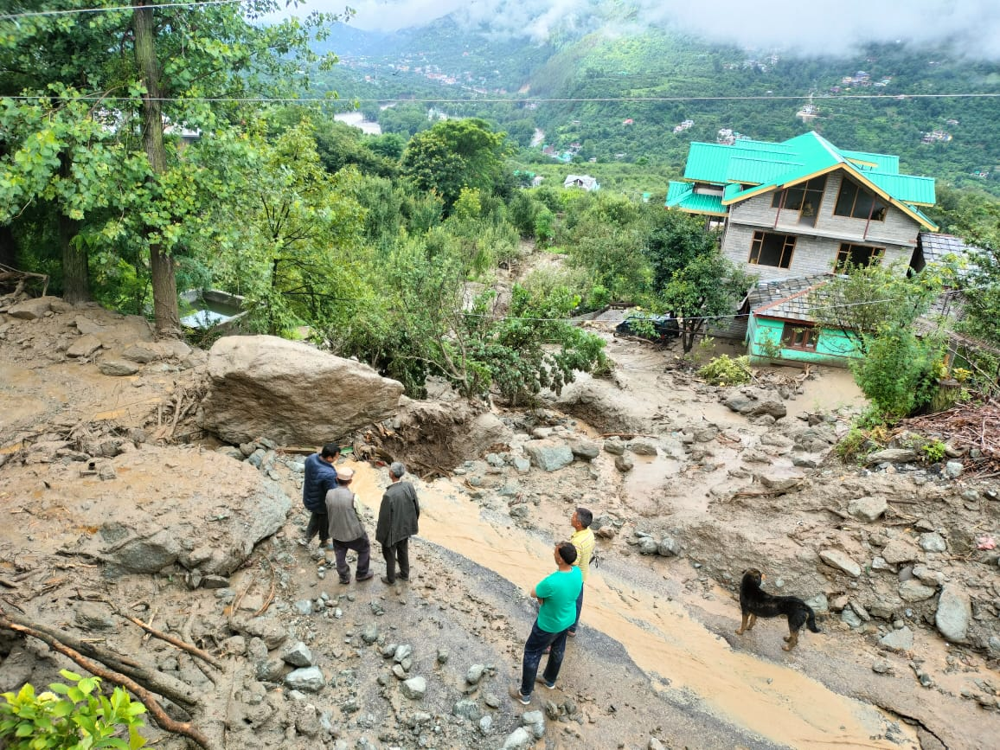
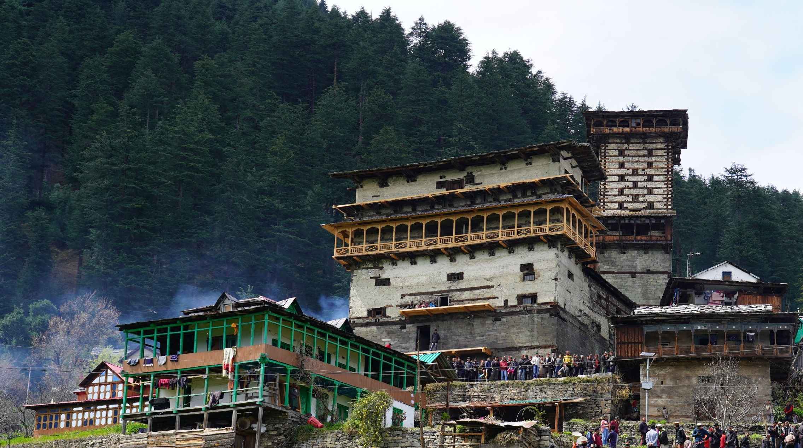
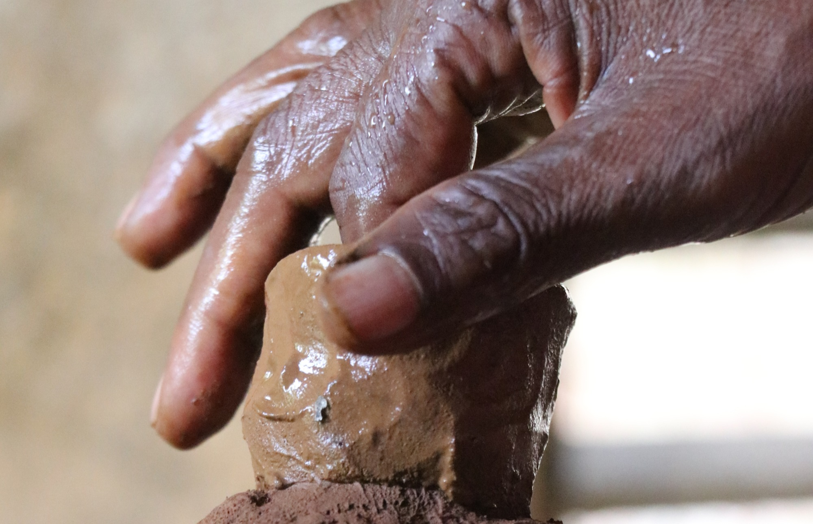

All Posts

The mountains are not angry — they are tired of being ignored!
The news I am seeing from the place I call home, Himachal Pradesh, is so sad and painful. But I knew somewhere that it was inevitable and...

Kullu Dussehra: Where Devotion, Folk Traditions, and Global Culture Converge
Each year, the peaceful Kullu Valley bursts into color and celebration during Kullu Dussehra one of India's most unique festivals. While...

Where Gravity Grinds Livelihood: The Zero-Carbon Flour Mills (Gharat) of the Himalayas
Far away from the roar of modern mills, nestled amidst the lush green valleys and snow-capped peaks of the Himalayas, whispers a...